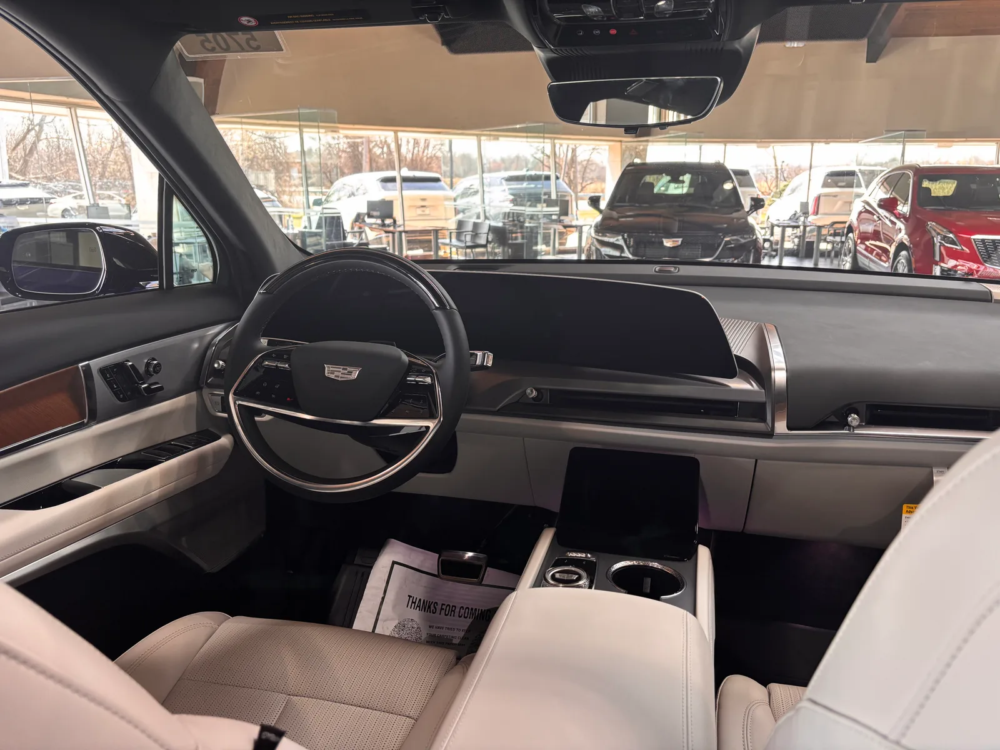
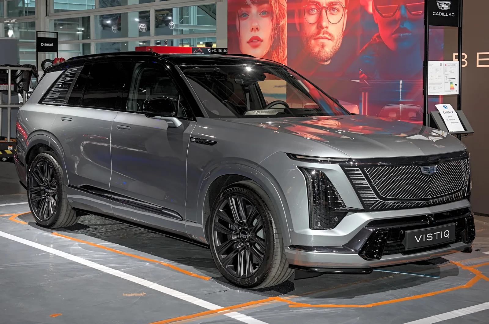

▲ 캐딜락 비스틱. 2026년 8월 국내 환경부 배출가스·소음 인증을 통과하며 출시가 임박했다
캐딜락의 3열 대형 전기 SUV 비스틱이 국내 환경부 인증을 통과했습니다. 정식 출시 시점과 가격은 아직 공개되지 않았지만, 인증 통과는 국내 출시가 임박했다는 신호로 해석됩니다. 이 차는 캐딜락 전기 SUV 라인업에서 중형 리릭과 최상위 에스컬레이드 IQ 사이의 빈틈을 메우는 포지션으로, 전장 5,222mm의 대형 차체에 최대 7인승 3열 구성을 갖췄습니다.
1. 438km, 전년 대비 소폭 개선된 실주행거리
비스틱의 국내 인증 주행거리는 상온 기준 438km(도심 475km, 고속도로 392km)입니다. 저온 환경에서는 346km(도심 332km, 고속도로 363km)로 다소 줄어듭니다. 이는 전년도 인증치 대비 상온 12km, 저온 32km가 개선된 수치로, 캐딜락이 배터리 관리 소프트웨어 업데이트 등을 통해 저온 성능을 꾸준히 다듬어온 것으로 풀이됩니다. 102kWh에 달하는 대용량 배터리를 감안하면 대형 3열 SUV로서는 준수한 효율입니다.

▲ 비스틱 실내. 33인치 커브드 디스플레이와 구글 오토모티브 기반 인포테인먼트, 23개 스피커 AKG 스튜디오 오디오를 갖췄다
2. 615마력 듀얼모터, 대형 SUV답지 않은 순발력
파워트레인은 듀얼모터 사륜구동으로 최고출력 615마력, 최대토크 89.7kg·m을 냅니다. 3열 7인승 대형 SUV라는 체급을 감안하면 상당히 여유 있는 수치로, 무거운 차체에도 불구하고 즉각적인 반응성을 확보한 것이 특징입니다. 실내는 33인치 커브드 디스플레이와 구글 오토모티브 기반 인포테인먼트를 탑재했고, 23개 스피커로 구성된 AKG 스튜디오 오디오와 돌비 애트모스를 지원해 대형 전기 SUV에 걸맞은 편의사양을 갖췄습니다.
| 항목 | 스펙 |
|---|---|
| 배터리 | 102kWh 리튬이온 |
| 모터 | 듀얼모터 AWD, 615마력 |
| 최대토크 | 89.7kg·m |
| 1회충전 주행거리(상온) | 438km |
| 1회충전 주행거리(저온) | 346km |
| 전장 | 5,222mm |
| 승차인원 | 최대 7인승(3열) |

▲ 2025년 취리히 오토쇼에 전시된 비스틱. 리릭보다 크고 에스컬레이드 IQ보다는 작은 중대형 포지션이 한눈에 드러난다
3. 리릭과 에스컬레이드 IQ 사이, 가격이 관건
비스틱의 국내 성패는 결국 가격에 달려 있습니다. 캐딜락 전기 SUV 라인업에서 중형급 리릭과 최상위 플래그십 에스컬레이드 IQ 사이에 위치하는 만큼, 두 모델 사이 어느 지점에 가격을 책정하느냐가 관건입니다. 이미 국내에 출시된 에스컬레이드 IQ가 750마력, 710km급 전동화 플래그십으로 화제를 모은 바 있어, 비스틱이 상대적으로 합리적인 가격에 3열 대형 전기 SUV를 원하는 수요층을 공략할 수 있을지 주목됩니다.

▲ 캐딜락 에스컬레이드 IQ. 이미 국내 출시된 이 최상위 플래그십과 비스틱의 가격 격차가 소비자 선택의 핵심 변수가 될 전망이다
4. 국내 캐딜락 전기차, 리릭 이어 두 번째 모델 될까
현재 국내에서 정식 수입·판매 중인 캐딜락 전기차는 리릭이 유일합니다. 2024년 99대, 2025년 181대가 국내 출고됐지만, 2026년 2월부터는 재고 소진으로 판매가 일시 중단된 상태입니다. 이런 가운데 이미 인증을 마친 에스컬레이드 IQ에 이어 비스틱까지 합류하면, 캐딜락코리아의 전기 SUV 라인업이 한층 두꺼워지는 셈입니다. 캐딜락코리아는 리릭-V와 비스틱의 국내 출시를 2026년 목표로 추진 중인 것으로 알려졌습니다.
5. 정리 — 3열 전기 SUV 경쟁에 새 변수
국내 3열 전기 SUV 시장은 기아 EV9, 현대 아이오닉9 등 국산 모델이 주도해왔습니다. 여기에 캐딜락 비스틱까지 가세하면 수입 프리미엄 대형 전기 SUV 선택지가 한층 넓어지는 셈입니다. 환경부 인증이 완료된 만큼 정식 출시까지는 트림 구성과 가격 발표만 남은 상태로, 이르면 연내 국내 상륙이 가능할 것이라는 관측이 나옵니다. 정확한 출시일과 가격이 공개되는 대로 다시 전해드리겠습니다.